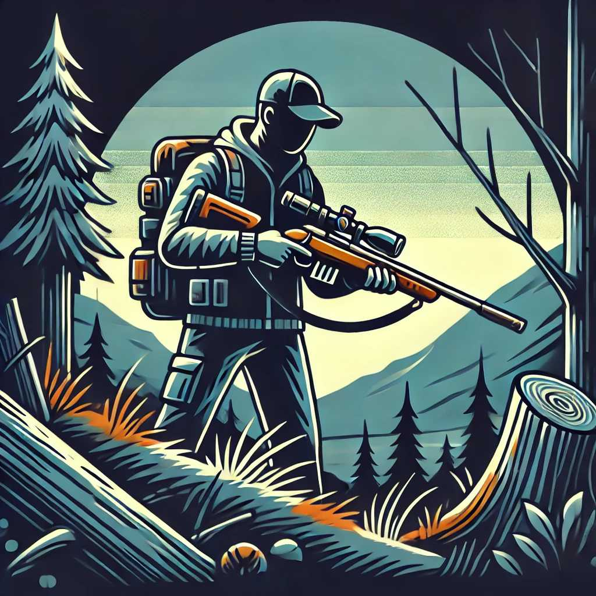

Firearm Basics: What You Need to Know About Gun Safety
Understanding firearm safety is crucial for anyone who owns or uses a gun. Proper handling and knowl... Read more
Understanding firearm safety is crucial for anyone who owns or uses a gun. Proper handling and knowl... Read more
When you find yourself in a survival situation, preparing meals with limited resources can be a chal... Read more

Being prepared for an emergency can make a significant difference in your ability to handle a disast... Read more
In today’s world, knowing how to protect yourself is an invaluable skill. Self-defense strategies ca... Read more
Knowing how to tie a variety of knots is a critical skill for any survivalist. Knots can be used for... Read more
Survival situations can be incredibly stressful and challenging. Maintaining a calm and focused mind... Read more
Building a shelter is one of the most critical skills in a survival situation. A well-constructed sh... Read more
When you're in the wilderness without a compass, natural navigation techniques can help you find you... Read more
Access to safe drinking water is crucial in any survival situation. Contaminated water can lead to s... Read more
In survival situations, access to medical help may be limited or nonexistent. Knowing how to perform... Read more